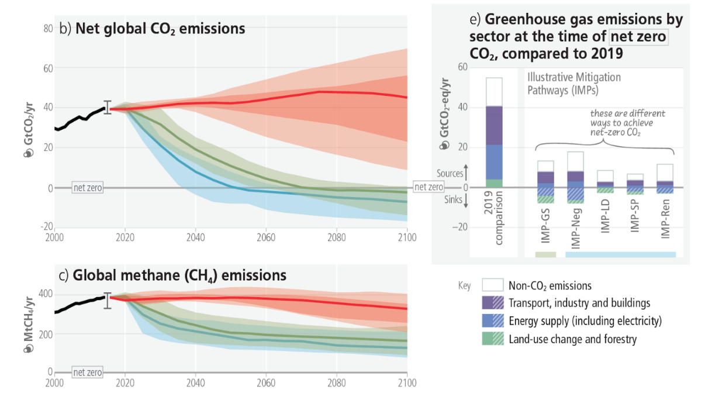

library(readr) # biblioteca de importação de dados
library(dplyr) # biblioteca para uso do operador pipe "%>%"
library(plotly)
# Carregamento dos dados da internet
url <- "https://raw.githubusercontent.com/owid/co2-data/master/owid-co2-data.csv"
co2_data <- read.csv(url)
# Filtragem dos dados para o Brasil usando subset()
co2_brasil <- subset(co2_data, country == "Brazil")
# Criação do gráfico interativo com plot_ly
co2_plot <- plot_ly(data = co2_brasil, x = ~year, y = ~co2, type = 'scatter', mode = 'lines+markers') %>%
layout(title = "Emissões de CO2 no Brasil ao longo dos anos",
xaxis = list(title = "Ano"),
yaxis = list(title = "Emissão de CO2 (milhões de toneladas)"))Mais interatividade !
Objetivos:
1. Observar a capacidade extensiva de interação com o pacote “plotly”
2. Elaborar um gráfico com controle deslizante
3. Elaborar um gráfico com menu suspenso
Até o momento só “arranhamos” o potencial de interatividade gráfica do pacote
plotly. Como já mencionado, essa biblioteca permite um grande conjunto de ações de usuário, como deslizadores (sliders), menu de escolha, e botões, entre muitos.
Adicionando um controle deslizante por intervalo
Um slider dessa natureza permite que se escolha uma janela de dados para um estudo mais detalhista naquela região. Nesse caso é possível agregar a um gráfico simples um controle deslizante de intervalo (rangeslider).
Podemos ilustrar seu emprego pela observação de gases de efeito estufa, e em especial, da emissão de dióxido de carbono no Brasil a partir de uma base de dados da internet. Para isso, você aprenderá a obter um arquivo a partir de base de dados da internet, filtrar para um subconjunto desejado, e elaborar o gráfico resultante, com um controle deslizante adicional.
Emissão de CO\(_{2}\) e o efeito estufa
As emissões de CO\(_{2}\) e outros gases pela queima de combustíveis fósseis tem grande responsabilidade sobre o efeito de estufa, incidindo diretamente sobre as alterações climáticas. Para reduzir essas emissões é necessário transformar a matriz energética atual, indústria e sistemas alimentares.
Para compreender a emissão de CO\(_{2}\) observada no Brasil no período de 1890 a 2022, execute o trecho de código que segue em um script do `R (ou seja, copie, cole, e execute), a partir da fonte Our World in Data.

Agora, a cereja do bolo. A inserção de um controle deslizante, para a seleção de faixas para um estudo mais focado.
co2_plot %>%
rangeslider()
Você pode copiar e colar os scripts na sequência para sua execução, ou apenas adicionar o comando
rangeslider() com o operador pipe %>% ao final. Experimente agora posicionar o mouse num dos dois marcadores laterais do gráfico inferior, arrastando-o em seguida, e observe o resultado. O controle deslizante pode ser útil quando se deseja focar em determinada região do gráfico. Por exemplo, ajustar a emissão de CO\(_{2}\) para os últimos anos.